Adesivos e Vitrines
A utilização de adesivos que se adequam aos formatos e cores é complementada pela delicadeza da pintura, personalizando seu ambiente de trabalho e residência, tornando-o mais agradável.
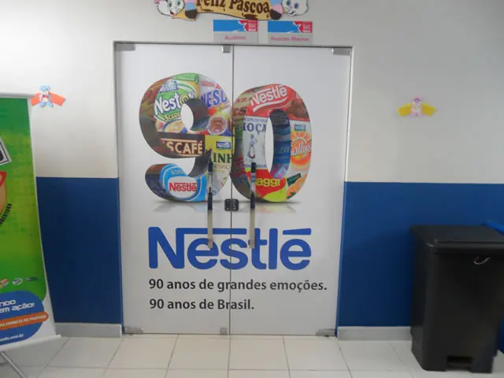
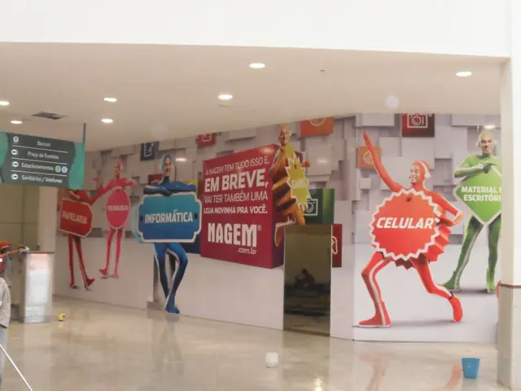
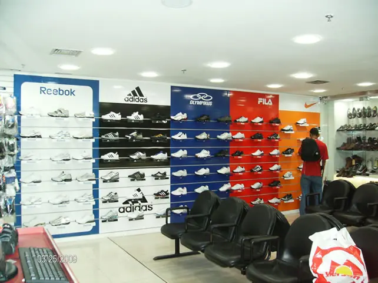
Feira de Santana · Bahia
A Feira Comunicação atua no segmento de comunicação visual, etiquetas e rótulos em conformidade com as melhores práticas e buscando inovar e solucionar as necessidades dos nossos clientes.
Frente 1
A parte técnica da comunicação visual é fundamental para garantir personalidade e confiança a uma empresa.
As fotos abaixo são as que a Feira Comunicação publica em cada uma destas categorias no site dela.
A utilização de adesivos que se adequam aos formatos e cores é complementada pela delicadeza da pintura, personalizando seu ambiente de trabalho e residência, tornando-o mais agradável.



Front Light: A iluminação externa permite excelente visualização noturna com o auxílio dos projetores de face única ou duplicada. A arquitetura resistente faz com que o equipamento suporte as ações climáticas por um longo tempo. Back Light: Com utilização de lâmpadas de designs variados, pode ser de dupla ou única face na iluminação interna. A instalação pode ser feita em postes, paredes e qualquer suporte.
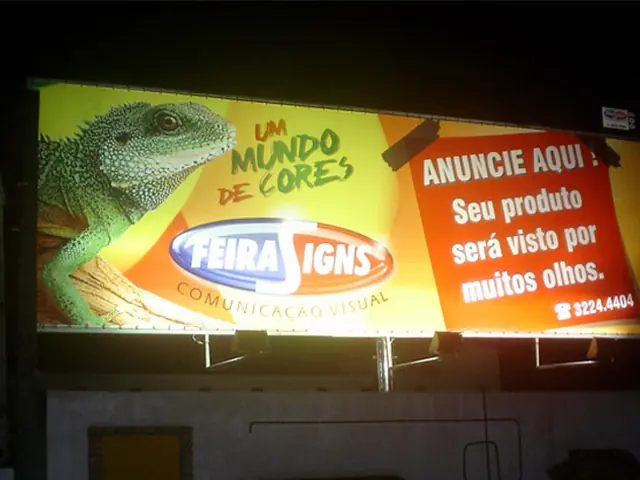
Os banners podem ser para utilizados internamente, como sinalização, decoração, eventos, shoppings, vitrines, pontos de venda, stands, palestras, entre outros. Com impressão digital em lona ou canvas, a definição de cores possui alta resolução. A Lona tem alto grau de resistência e durabilidade.
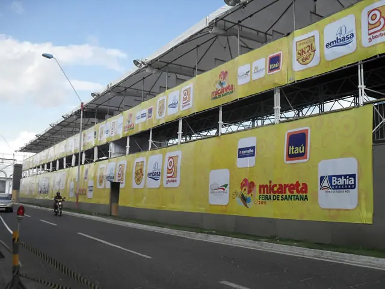
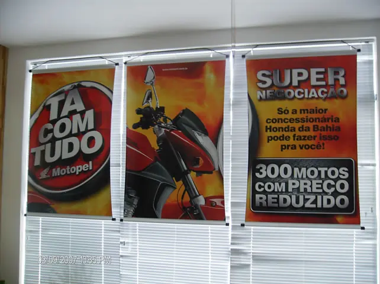
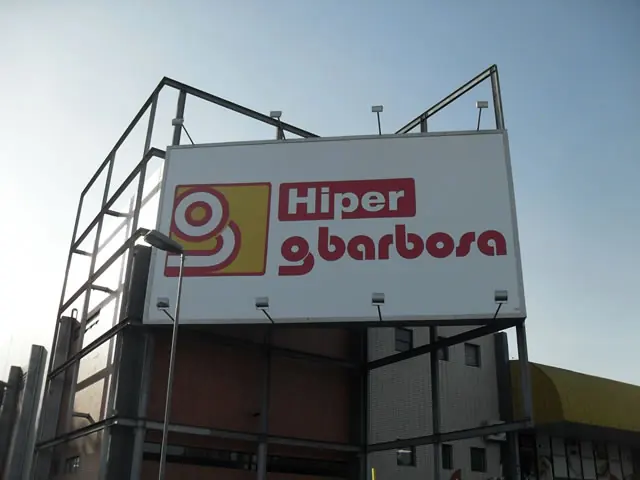
Fabricados em lona, alumínio composto, policarbonato, entre outros materiais, as coberturas e toldos tem a função de amenizar as ações climáticas em atividades externas, proporcionando conforto e proteção a seus clientes.
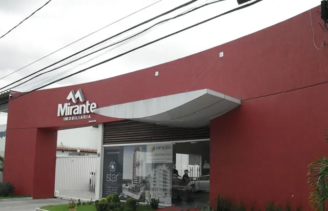
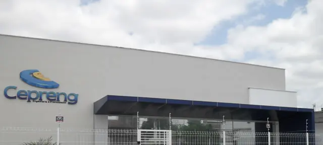
A fachada é a primeira impressão atribuída a uma empresa pelos clientes. Um design bem projetado, com peças metálicas de sustentação, impressões em lona vinílica e estruturas em aço, alumínio ou PVC podem ser utilizados para tornar a decoração mais moderna e chamativa.
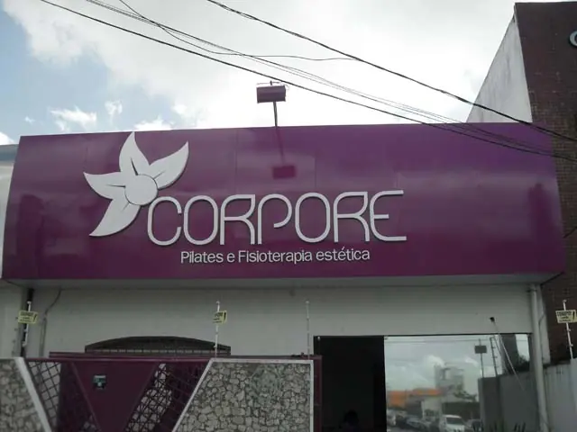
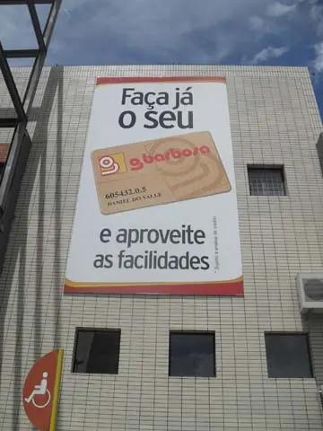
Considerada como uma mídia de grande impacto, o Front Light, empena e outdoor podem ser utilizados para a exibição de anúncios, fixação de marcas e campanhas publicitárias. Destacam-se pela alta qualidade de impressão, resistência e ótima visibilidade.
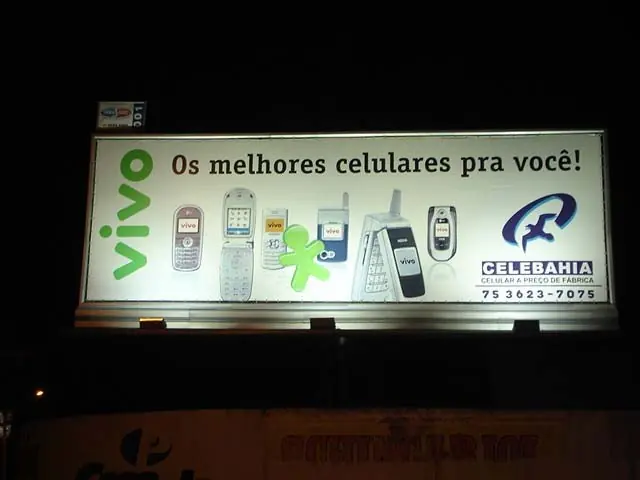
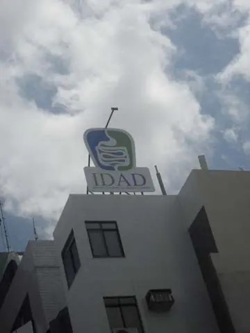
Propomos uma comunicação visual diferenciada através da realização de projetos especiais encomendados pelo cliente. Diferentes e personalizadas placas de sinalização poderão ser solicitadas para complementar a comunicação visual.
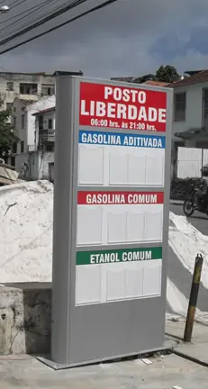
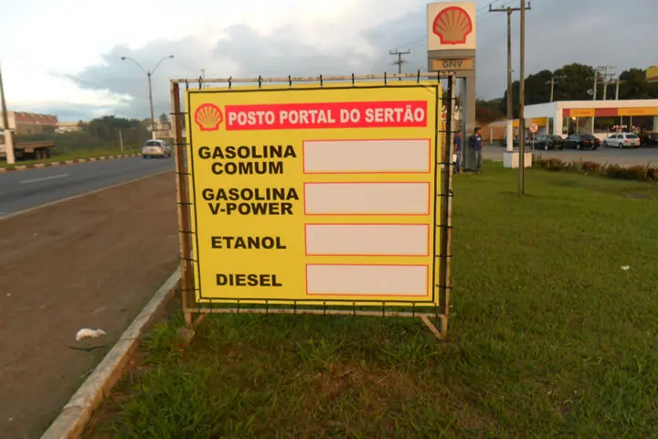
A sinalização interna é utilizada para organizar e orientar a procura de produtos e departamentos. Além disso, oferecemos o serviço de sinalização vertical e horizontal em estacionamentos, ruas e estradas com materiais de alta durabilidade e personalizados a qualquer tamanho e necessidade.
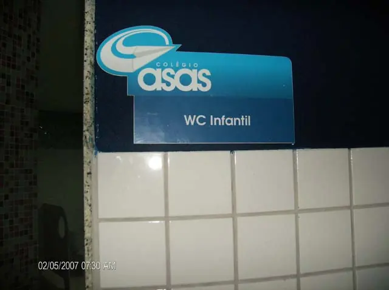
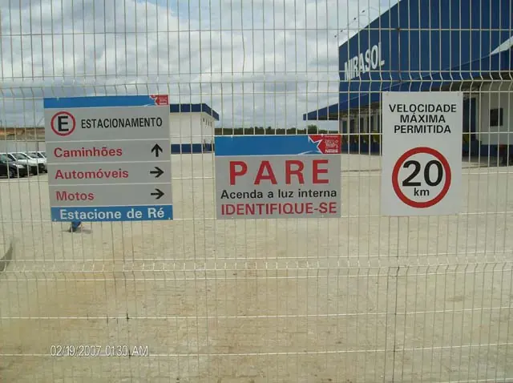
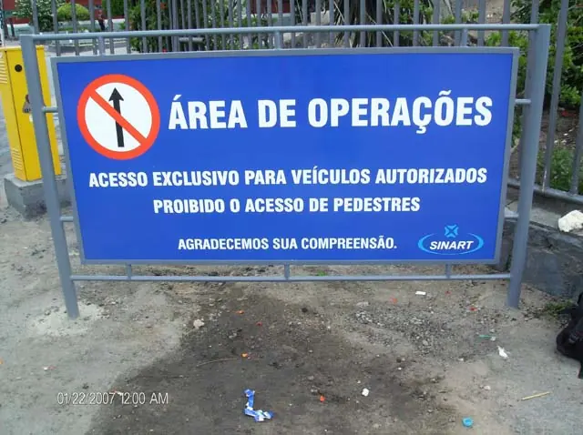
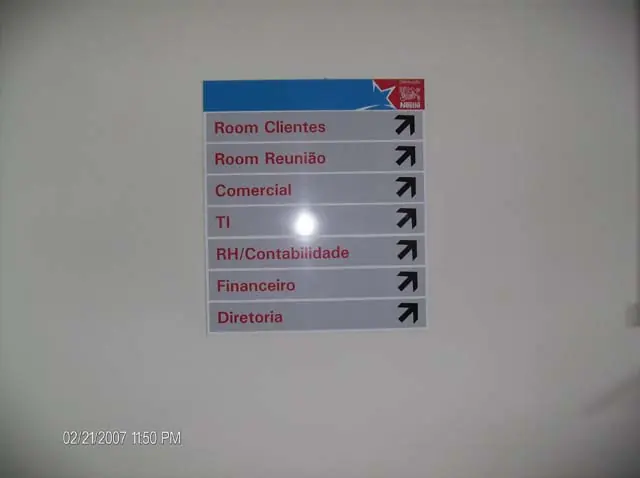
Construídos para uso interno e externo, os totens ajudam a identificar a localização da sua empresa em estruturas metálicas reforçadas, revestidas e pintadas. Já os Luminosos garantem a identificação da sua empresa podendo ser de uso interno e externo com sistemas personalizados ou modulares. Painéis sob medida com materiais de alta durabilidade.
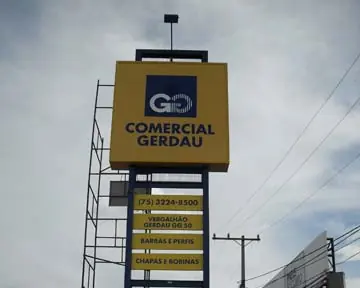
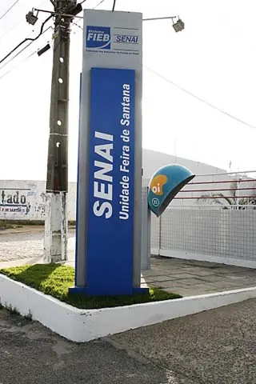
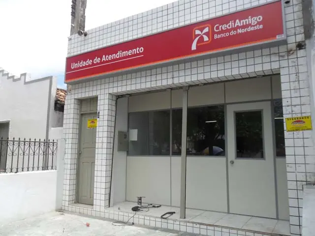
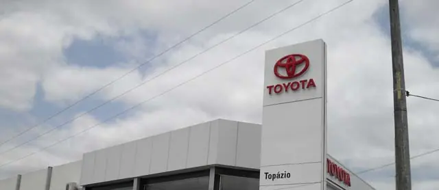
Veículos padronizados para uma maior propagação da marca ou de campanhas publicitárias especiais. Carros, aviões, motos, quadrículo e caminhões são envelopados com películas adesivas especiais.
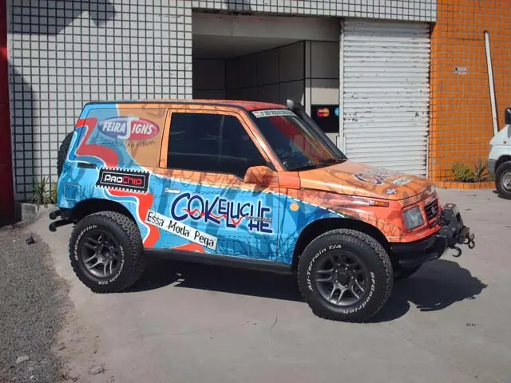
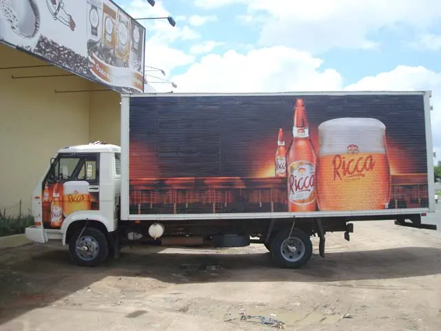
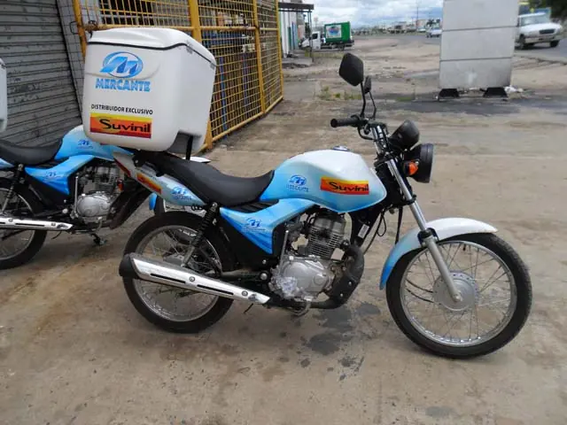
Produzimos nossos materiais com equipamentos de última geração, buscando a redução do impacto ambiental e a preservação da saúde de nossos colaboradores.
Frente 2
Materiais fabricados especialmente para etiquetagem e identificação de produtos em embalagens.
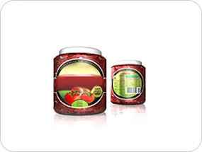
Os rótulos agregam valor visual ao produto, podendo ser impressos em até 8(oito) cores. Podem contar com aplicações especiais em verniz UV, hot stamping, coldstamping, plastificação e impressão no verso.
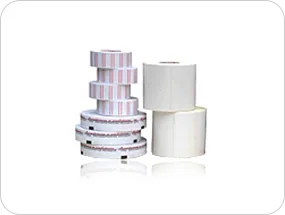
Amplamente utilizadas por todos os setores da indústria, comércio ou prestadores de serviço, são encontradas também no setor de entretenimento.
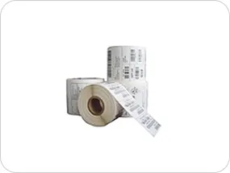
Impressa de forma eletrônica, é utilizada para identificação de um produto utilizando códigos numéricos ou de barras se diferenciando da impressão gráfica convencional.
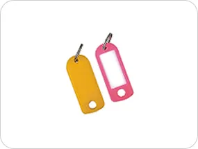
Muito utilizadas na indústria têxtil e de confecções, as Tag’s podem ser adesivas ou não. Atribuem particularidade e melhoram a identificação do produto.
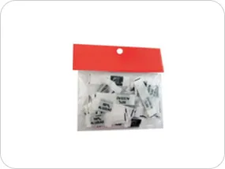
Utilizada principalmente na indústria têxtil para fornecimento de informações básicas sobre o produto, como vestuário em geral, itens de decoração em tecido e afins. Pode ser produzida em polinil (poliéster ou algodão) em duas opções de cores: branco perolado e resinado.
Marcas
A empresa
Oferecer aos clientes soluções inteligentes em comunicação visual, etiquetas e rótulos.
Ser referência em etiquetas e rótulos no Nordeste e ampliar a segmentação de clientes.
Blog
Orçamento
Um de nossos consultores entrará em contato em breve!
Fale com o setor
Contatos